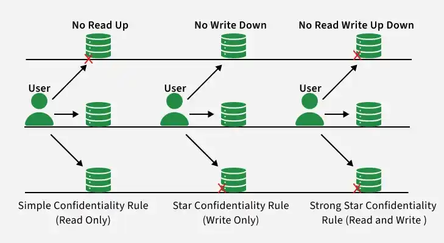
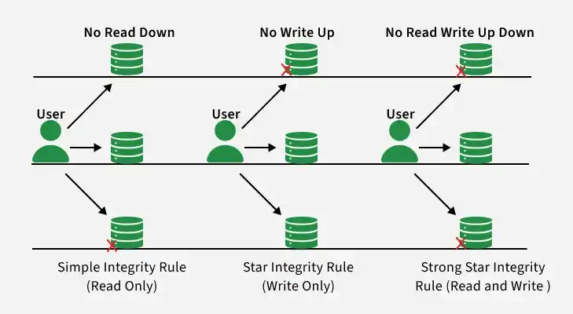
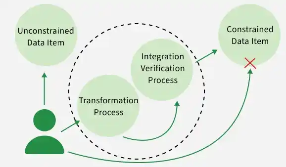
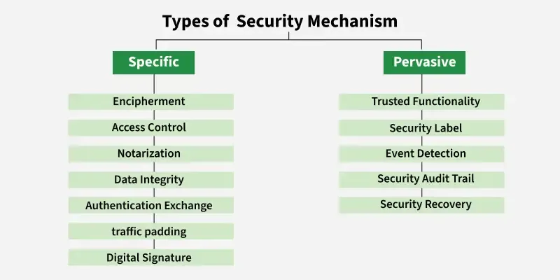

3. Protection Models
- 3.1 Introduction
- Classic models hub (BLP, Biba, Clark-Wilson)
- 1. Access control models (MAC, DAC, RBAC, ABAC)
- 2. Confidentiality · 3. Integrity
- 4. TCB · 5. Availability
- 6. Defense in depth · 7. Least privilege · 8. POLA
- 9. Security mechanisms
3.1 Introduction
In modern computing systems, protection models provide the conceptual, architectural, and mathematical frameworks required to enforce security policies. While standard OS isolation mechanisms (like CPU Execution Rings) handle low-level process separation, formal protection models dictate how users and systems interact with sensitive applications and data.
These frameworks map directly to the pillars of security, organizing defenses across Access Control, Confidentiality, Integrity, Availability, Layered Architectures, and Human Factors.
Classic Security Models
Overview hub — full detail in §2 Confidentiality (Bell-LaPadula) and §3 Integrity (Biba, Clark-Wilson).
- Bell-LaPadula: confidentiality — no read up, no write down.
- Biba: integrity — no read down, no write up.
- Clark-Wilson: commercial integrity — well-formed transactions, separation of duty.
Classic security models are used for maintaining security regarding confidentiality, integrity, and availability. These models deal with the CIA triad. There are three key models for maintaining these triads:
- Bell-LaPadula Model — confidentiality
- Biba Model — integrity
- Clark-Wilson Security Model — commercial integrity
1. Access Control Models (ACM)
Access Control Models define the structural mechanisms through which a system determines whether a verified subject has the right to access a specific object.
Mandatory Access Control (MAC)
DefinitionA strict, non-discretionary access control model where security policies are centrally defined and managed by a system administrator. Individual users have absolutely no power to alter permissions or share access to files they own.
How it works: It relies on an administrative classification system. Every subject is assigned a security clearance level (e.g., Secret, Top Secret), and every object is assigned a classification label. The operating system kernel enforces access by checking if the subject's clearance level matches or exceeds the object's classification label.
Implementation Examples: SELinux (Security-Enhanced Linux) in Ubuntu/RedHat, and military data isolation systems.
Pros: Highly secure; completely immune to user negligence or malicious data-sharing scripts.
Cons: Extremely rigid, complex to configure, and demands high administrative overhead.
Discretionary Access Control (DAC)
DefinitionAn access control model where the owner of an object holds complete discretion over who is allowed to access that resource and what permissions they have.
How it works: Access is determined entirely by the identity of the subject and permissions explicitly mapped in an Access Control List (ACL). If you create a file, you are its data owner and can pass read/write permissions to any other user on the system.
Implementation Examples: Standard POSIX/Linux file permissions (chmod), Windows NTFS file properties.
Pros: Highly flexible, user-friendly, and simple to implement in standard corporate networks.
Cons: Inherently weak security. If a user's account is compromised, the attacker can alter permissions on all files owned by that user or accidentally share sensitive assets.
Role-Based Access Control (RBAC)
DefinitionAccess control determined by organizational roles rather than individual user identities.
How it works: Permissions are explicitly tied to specific Roles (e.g., Billing Account Manager, Software Developer, HR Specialist). Users are assigned to these roles. When a user changes departments, their role assignment is updated, and they automatically inherit the new set of permissions.
Implementation Examples: Enterprise Active Directory configurations, Jira project permissions, and WordPress user roles (Administrator, Editor, Author).
Pros: Scales efficiently in massive organizations; drastically reduces administrative bloat.
Cons: Can suffer from Role Explosion, where organizations create hundreds of hyper-specific roles, making audits incredibly difficult.
Attribute-Based Access Control (ABAC)
DefinitionA highly flexible, next-generation access control model that grants access rights based on a real-time evaluation of attributes.
How it works: The policy engine looks at four distinct types of attributes before rendering a decision:
- Subject attributes: Role, department, age, clearance level.
- Object attributes: File type, department owner, classification level.
- Action attributes: Read, write, delete, edit.
- Environment attributes: Current time, login location, network subnet, device health.
Example Rule: "Allow the user to read the Financial database IF their role is Accountant, AND the file is marked Finance, AND they are logging in from the office IP address, AND the time is between 9:00 AM and 5:00 PM."
Pros: Context-aware; allows for incredibly precise, granular access rules.
Cons: Requires a highly sophisticated central policy evaluation engine, causing minor computational latency during access checks.
Rule-Based Access Control (RuBAC)
DefinitionAn access model where access permissions are dictated by strict, system-enforced rules or conditions, independent of the user's role or identity.
How it works: It acts as a set of global filters. If the request meets the predefined system criteria, it is allowed; if not, it is blocked.
Implementation Examples: Network firewalls (e.g., blocking all traffic on port 22 unless it matches a specific source IP), router access control filters, or time-locked digital bank vaults.
Model picker — when to use which ACM
| Model | Best when | Avoid when |
|---|---|---|
| MAC | Military/government labels; strict central policy | Users need flexible file sharing |
| DAC | General-purpose OS; owner controls permissions | Malware or insider risk is high |
| RBAC | Enterprise with job roles (HR, dev, finance) | Too many one-off roles (role explosion) |
| ABAC | Cloud, fine-grained context (time, location, device) | Simple LAN with few policies |
2. Confidentiality Models
Confidentiality models are mathematical and logical frameworks designed primarily to prevent unauthorized information disclosure or leakage, frequently used in secure government, military, and corporate cloud platforms.
Bell-LaPadula Model (BLP)
DefinitionA state-machine model built explicitly to enforce data confidentiality within a hierarchical multi-level security system.
This model focuses on maintaining confidentiality by preventing unauthorized access. The model was invented by scientists David Elliot Bell and Leonard J. LaPadula — thus it is called the Bell-LaPadula Model. Here, the classification of subjects (users) and objects (files) is organized in a non-discretionary fashion, with respect to different layers of secrecy.
The Core Philosophy: It prevents data from moving from a high security level down to a lower security level (preventing information leaks).
The Three Rules:
- Simple Confidentiality Rule (No Read Up): The subject can only read files on the same layer of secrecy and the lower layer of secrecy, but not the upper layer of secrecy. (e.g., A clerk with Secret clearance cannot read a Top Secret file).
- Star Confidentiality Rule (No Write Down): The subject can only write files on the same layer of secrecy and the upper layer of secrecy, but not the lower layer of secrecy. (e.g., An officer viewing a Top Secret file cannot write that data into a Secret file, preventing accidental or malicious leaks).
- Strong Star Confidentiality Rule (No Read Write Up Down): This rule is highly secured and the strongest, which states that the subject can read and write files on the same layer of secrecy only — not the upper layer of secrecy or the lower layer of secrecy.

Pros: Provides absolute, mathematically proven data confidentiality.
Cons: Completely ignores data integrity. A lower-level user could overwrite and destroy high-level data.
Lattice-Based Security Model
DefinitionA broader structural mathematical model that underpins frameworks like Bell-LaPadula.
How it works: It defines a clear mathematical structure containing a partially ordered set of security levels, complete with a unique upper bound (Least Upper Bound) and a lower bound (Greatest Lower Bound). A subject can only access an object if their security clearance falls perfectly within the defined lattice boundary parameters.
Non-Interference Model
DefinitionAn advanced mathematical confidentiality model that focuses on high-level system behaviors rather than individual file access actions.
How it works: It demands that actions performed by a highly privileged subject (high-level inputs) can have absolutely no visible effect, modification, or interference on the system states observable by lower-privileged users (low-level outputs). If a low-level user can analyze system performance delays or error changes caused by a high-level process, they could infer secret data through covert side-channels. Non-interference systematically strips out these channels.
3. Integrity Models
Integrity models prioritize the absolute validity, accuracy, and trustworthiness of information, ensuring that unauthorized modifications are impossible.
Biba Model
DefinitionThe exact mathematical mirror image of the Bell-LaPadula model, explicitly optimized to preserve data integrity instead of confidentiality.
This model focuses on integrity rather than confidentiality, preventing unauthorized and improper modifications. It was invented by scientist Kenneth J. Biba. The classification of subjects (users) and objects (files) is organized in a non-discretionary fashion, with respect to different layers of integrity. This works the exact reverse of the Bell-LaPadula Model.
The Core Philosophy: It prevents low-integrity (untrustworthy) information from corrupting high-integrity (trustworthy) systems.
The Three Rules:
- Simple Integrity Rule (No Read Down): The subject can only read files on the same layer of secrecy and the upper layer of secrecy, but not the lower layer of secrecy. (Reason: Reading unverified, low-integrity data could corrupt the high-level user's logical workflow).
- Star Integrity Rule (No Write Up): The subject can only write files on the same layer of secrecy and the lower layer of secrecy, but not the upper layer of secrecy. (Reason: Prevents an untrusted user or malware process from editing or modifying a highly critical system file).
- Strong Star Integrity Rule (No Read Write Up Down): This rule is highly secured and the strongest, which states that the subject can read and write files on the same layer of secrecy only — not the upper layer of secrecy or the lower layer of secrecy.

Pros: Highly effective at protecting core system configurations and operational kernels from external corruption.
Cons: Completely ignores confidentiality. High-level secrets can freely flow down to low-level targets.
Clark-Wilson Model
DefinitionA highly practical, real-world integrity model designed specifically for commercial business and financial environments rather than military structures.
This model is a highly secured model. It has the following entities:
- Subject: Any user who is requesting data items.
- Constrained Data Items (CDI): They cannot be accessed directly by the subject. These need to be accessed via the Clark-Wilson Security Model.
- Unconstrained Data Items (UDI): They can be accessed directly by the subject.
The Components of the Clark-Wilson Security Model:
- Transformation Process (TP): The subject's request to access the constrained data items is handled by the transformation process, which then converts it into permissions and forwards it to the integration verification process.
- Integration Verification Process (IVP): It will perform authentication and authorization. If that is successful, then the subject is given access to constrained data items.

How it works: It shifts focus away from simple clearance levels, enforcing integrity through two primary real-world concepts:
- Well-Formed Transactions: Users cannot modify data directly or arbitrarily. They can only manipulate data by executing a highly structured, specific program or software API. This ensures that data formatting is perfectly validated at every step.
- Separation of Duties (SoD): Divides critical operations among multiple distinct individuals to prevent internal fraud.
Key Components:
- CDI (Constrained Data Items): Highly sensitive data that must be protected by the integrity model (e.g., bank account balances).
- UDI (Unconstrained Data Items): Unvalidated data coming from outside sources (e.g., a raw user text input box).
- IVPs (Integrity Verification Procedures): Background processes that constantly audit and verify that CDIs conform to valid business states.
- TPs (Transformation Procedures): Well-formed application transactions that safely take UDIs, validate them, and convert them into CDIs.
Brewer-Nash Model (The Chinese Wall)
DefinitionA dynamic access model designed specifically to prevent Conflicts of Interest within consulting firms, financial systems, or legal institutions.
How it works: It constructs a fluid, invisible barrier around data based on user history.
Example: A consultant works at an agency that services both Company X and Company Y (who are direct market competitors). The moment the consultant opens a file belonging to Company X, the Brewer-Nash model dynamically adjusts their permissions in real-time, completely blocking them from reading or opening any files related to Company Y.
In computer science, the term CAP Theorem (Consistency, Availability, Partition Tolerance) is a distributed systems database concept. The Brewer-Nash framework itself refers specifically to the Chinese Wall security model for conflict isolation—not the CAP trade-off theorem.
4. Trusted Computing Base (TCB) Model
DefinitionThe complete collection of all hardware, software, firmware, and logical execution paths inside a computer system that are absolutely essential for enforcing its security policy.
The Core Rule: The TCB must be kept as small, isolated, and simple as possible. Every line of code added to the TCB increases the system's attack surface. If any component inside the TCB is compromised, the security of the entire ecosystem is broken.
5. Availability Models
Availability models outline the architectural frameworks and operational strategies required to ensure systems remain operational and accessible to authorized users.
1. Redundancy and Failover
Eliminating single points of failure by deploying backup hardware, networks, and storage pools. If a primary component drops offline, an automated tracking protocol instantly executes a failover, routing traffic to the backup node with minimal interruption.
2. Load Balancing
Reverse proxies and traffic distribution networks (like Nginx, HAProxy, or AWS ALB) that receive incoming web traffic and distribute it across a cluster of backend servers. This prevents any single node from becoming overwhelmed, optimizing response speeds and resource usage.
3. Fault Tolerance
The built-in capacity of a computer or infrastructure environment to continue operating normally despite catastrophic hardware failures occurring within its systems (e.g., utilizing dual-power supplies or multi-disk RAID matrices).
4. Disaster Recovery (DR) and Business Continuity Planning (BCP)
- BCP: The operational strategy defining how an organization keeps its vital business functions running during a major crisis.
- DR: The technical workflows, backup storage systems, and recovery scripts executed to restore completely lost IT systems and data infrastructure following a physical or digital catastrophe.
5. Distributed Denial-of-Service (DDoS) Mitigation
Utilizing cloud-scrubbing networks (such as Cloudflare or AWS Shield) that sit in front of the application network, analyzing incoming traffic patterns in real-time to drop malicious botnet requests while passing legitimate user traffic cleanly through.
6. Incident Response and Incident Management
A structured operational framework followed by an organization's security team (SOC) to detect, contain, eliminate, and recover from an active security breach or system compromise.
7. Scalability and Capacity Planning
- Vertical Scaling (Scaling Up): Adding more CPU or RAM to an existing server.
- Horizontal Scaling (Scaling Out): Automatically spinning up entirely new server instances to handle massive incoming traffic loads.
8. Monitoring and Alerting
Background metrics-gathering infrastructure (e.g., Prometheus, Grafana, Datadog) that constantly tracks CPU usage, network errors, and memory saturation, instantly firing off notifications to system administrators before a resource exhaustion event causes a system crash.
6. Defense in Depth Model (Layered Security)
The Defense in Depth model works on the principle that no single security control is perfect. By stacking multiple distinct protective layers across the organization, an attacker who breaks through one layer will be stopped by the next.
1. Physical Security
Protecting the physical buildings, server rooms, and hardware terminals from manual intrusion.
Controls: Biometric door locks, CCTV cameras, security guards, fences, and server rack cages.
2. Perimeter Security
The first line of digital defense blocking the external internet from the internal network.
Controls: Edge firewalls, DDoS protection layers, secure DNS routing, and edge routers.
3. Network Security
Controlling how data travels inside the internal network architecture once the perimeter is crossed.
Controls: Network segmentation (VLANs), Intrusion Detection/Prevention Systems (IDS/IPS), and internal network firewalls.
4. Host-Based Security
Securing individual endpoints, workstations, and server operating systems.
Controls: Endpoint Detection and Response (EDR) software, OS patch management, and local host firewalls.
5. Application Security
Protecting software, APIs, and web code running on the host platforms.
Controls: Web Application Firewalls (WAF), input validation, secure source code audits, and dependency vulnerability scanning.
6. Data Security
The final, core layer focusing strictly on protecting the actual data assets themselves.
Controls: Database encryption at rest, data masking, tokenization, and strict file access permissions.
7. User Security (The Human Element)
Defending against social engineering and human errors.
Controls: Phishing simulation drills, mandatory security awareness training, and multi-factor authentication mandates.
7. Least Privilege Model
The Principle of Least Privilege (PoLP) is a foundational protection model designed to limit access rights for users, accounts, and processes to the absolute bare minimum required to complete a given task.
- Principle of Minimal Privilege: Restricting accounts so they hold zero administrative capabilities unless specifically needed, containing the scope of potential damages.
- Segregation of Duties (SoD): Splitting critical administrative workflows across independent accounts to prevent internal fraud.
- Access Controls: Implementing precise access matrices (RBAC or ABAC) to explicitly bind users to defined boundaries.
- Privilege Escalation Mitigation: Implementing technical guardrails to prevent attackers from using bugs to upgrade from a standard user account to root/administrator access (e.g., blocking unsafe script execution routes or securing sudo file access blocks).
- Enhanced Security: Minimizing the organization's overall attack surface, preventing malware from spreading across network nodes.
- Compliance Requirements: Meeting legal audit standards (like ISO 27001, SOC2, or PCI-DSS), which explicitly demand documented proofs of user permission constraints.
8. Principle of Least Astonishment (POLA) Model
While mostly discussed in user interface (UI) and software API engineering, the Principle of Least Astonishment (POLA)—also called the Principle of Least Surprise—is a vital model in security design.
Core Concept: A system component, security policy, or interface should behave exactly as an experienced user would logically expect it to behave. It should never shock, surprise, or confuse the user.
Security Context: If a security system or permission mechanism is overly complex, counter-intuitive, or unpredictable, users will become frustrated. When users are confused by security tools, they actively look for workarounds—such as writing passwords on sticky notes, using unapproved shadow IT tools, or disabling local firewalls—ultimately exposing the organization to major security risks. Security systems must remain transparent, intuitive, and highly predictable to be effective.
9. Security Mechanisms
Security mechanisms are techniques and controls used to protect data and systems from unauthorized access, attacks, and misuse by ensuring confidentiality, integrity, and availability.
- Designed to safeguard information and system resources
- Ensure confidentiality, integrity, and availability (CIA triad)
- Classified into Specific and Pervasive security mechanisms
- Used across OSI layers to prevent, detect, and recover from attacks
Types of Security Mechanisms
Security mechanisms are broadly classified into two:

1. Specific Security Mechanisms
These mechanisms operate at specific OSI layers and provide targeted security services.
Key Types
-
Encipherment
- Protects data confidentiality by converting readable data into unreadable form
- Uses cryptographic algorithms
- Strength depends on the encryption technique used
-
Access Control
- Prevents unauthorized access to data or systems
- Implemented using passwords, PINs, firewalls, or access policies
-
Notarization
- Uses a trusted third party to validate communication
- Helps resolve disputes by maintaining transaction records
-
Data Integrity
- Ensures data is not altered during transmission
- Achieved using checksums, hashes, or message authentication codes
-
Authentication Exchange
- Verifies the identity of communicating entities
- Often uses handshaking mechanisms to confirm sender and receiver identities
-
Bit Stuffing
- Adds extra bits to data for error detection
- Commonly uses even or odd parity checks
-
Digital Signature
- Confirms sender identity and message authenticity
- Uses cryptographic techniques
- Ensures non-repudiation and data integrity
2. Pervasive Security Mechanisms
These mechanisms apply across all OSI layers and support overall system security.
Key Types
-
Trusted Functionality
- Built-in security features of a system
- Ensures reliable enforcement of security rules
-
Security Labels
- Tags data with classifications like Public, Confidential, or Top Secret
- Helps control access and handling of information
-
Event Detection
- Monitors systems for abnormal or suspicious activities
- Helps identify potential security threats early
-
Security Audit Trail
- Maintains logs of system activities such as logins and file access
- Useful for monitoring, investigation, and accountability
-
Security Recovery
- Restores systems after a security breach
- Ensures continuity and protection of data
Difference Between Specific and Pervasive Security Mechanisms
The following table shows the key differences between specific and pervasive security mechanisms, showing how each type plays an important role in protecting information.
| Specific Security Mechanisms | Pervasive Security Mechanisms |
|---|---|
| Applied to specific OSI layers | Applied across all OSI layers |
| Provide targeted security services like encryption and authentication | Support overall security and policy enforcement |
| Focus on protecting particular data | Ensure security management and system-wide controls |
| Examples: Encipherment, Access Control, Digital Signature | Examples: Trusted Functionality, Security Labels, Event Detection |
| Technical controls at specific layers | Management and infrastructural controls |
| Protects individual communications or data | Maintains security of entire system |
- Protection models enforce CIA through access control, formal models, and mechanisms.
- MAC = central labels; DAC = owner discretion; RBAC = roles; ABAC = attributes + context.
- BLP protects confidentiality; Biba and Clark-Wilson protect integrity.
- TCB is everything that must be trusted; smaller TCB = easier to verify.
- Defense in depth, least privilege, and POLA reduce human and design failure.